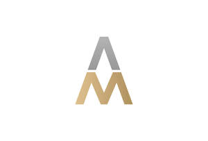

Trade Mark Journal No.2025/016 18 April 2025
UK00004184143 3 April 2025 (3)

- Class 3
- Perfumery; Perfumery and fragrances; Perfumery products; Perfumes; Perfume; Body deodorants [perfumery]; Fragrances; Eau de parfum; Eau de Cologne; Eau de cologne; Eau de colognes; Eau de toilette; Hair styling lotions; Styling sprays for the hair; Hair styling gels; Styling gels for the hair; Hair styling waxes; Hair styling gel; Hair styling preparations; Hair styling spray; Hair cosmetics; Hair shampoos; Hair pomades; Hair shampoo; Cosmetic hair lotions; Hair serums; Shampoos; Shampoo; Dandruff shampoo; Beard balm; Shampoos for human hair; Beard oil; Hair care serum; Massage oils; Massage oils and lotions; Facial massage oils; Body massage oils; Facial oils; Bath oils for cosmetic purposes; Oils for toiletry purposes; Creams (Cosmetic -); Cosmetic creams; Cosmetic creams and lotions; Anti-aging creams [for cosmetic use]; Anti-wrinkle creams [for cosmetic use]; Anti-ageing creams [for cosmetic use]; Cosmetic creams for the skin; Skin creams [cosmetic]; Skin creams [for cosmetic use]; Facial creams [cosmetic]; Facial creams [for cosmetic use]; Cleansing creams [cosmetic]; Cosmetic massage creams; Hand creams; Cosmetic hand creams; Hand lotions; Hand cream; Hand soaps; Body lotion; Body moisturisers; Body deodorants; Body shampoos; Body creams; Body scrubs; Face and body lotions; Body sprays; Shaving lotion; Shaving cream; Shaving lotions; Shaving gel; Shaving creams; Shaving soap; Shaving sets, comprised of shaving cream and aftershave; After shave lotions; Alum blocks for shaving; Pre-shave creams; Hair removing cream; Pre-shave gels; Depilatory wax; After-shave gel; Facial lotion; Hair gel; Facial cream; Hair wax; Hair balm; Make-up removing lotions; Mustache wax; Cosmetic hair dressing preparations; Facial masks; Facial moisturizers; Facial scrubs; Facial creams; Facial wash; Facial beauty masks; Facial concealer.
Atmirald Alshabani